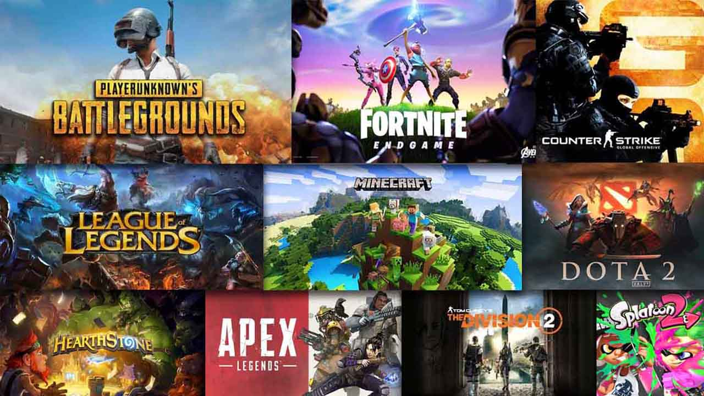
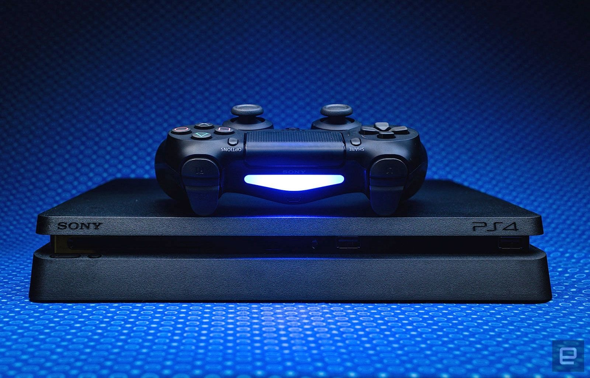
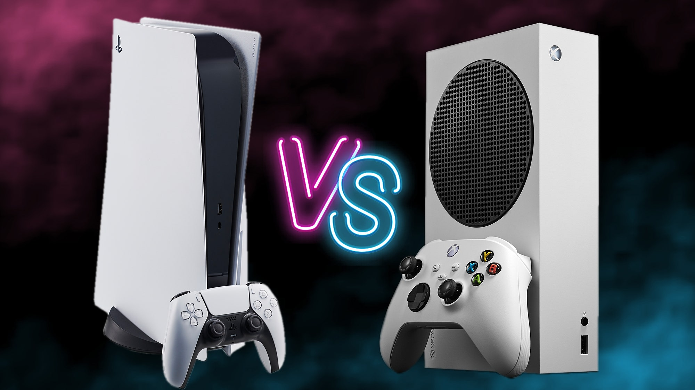

-

2020 Holiday Season's Biggest
Game Consoles
It’s
blockbuster season for video games.
With the holiday season on its way, the games industry is pushing out a diverse lineup of
titles,
from new installments
of long-running franchises like Activision’s Call of Duty and Ubisoft’s Assassin’s Creed to
EA’s
long-awaited Star Wars
Battlefront II.
But the real crowd pleasers this year may be in hardware. Microsoft and Nintendo are
offering new or
upgraded consoles
after Sony rereleased its PlayStation 4 console and more powerful PS4 Pro last year.
The hottest hardware ticket is Nintendo’s Switch console, which offers gamers the option of
plugging
in at home or
pulling it off its dock to play on the go. Even though it was released eight months ago, the
Switch
is still so popular
that supply is expected to be a problem at the end of the year.
The arrival this week of Microsoft’s new Xbox One X console — featuring more processing
power and 4K
resolution, which
means more defined picture quality — is also expected to make waves. The console supports
hundreds
of games from the
Xbox back catalog, including all Xbox One titles, as well as select Xbox 360 titles.
-

2020 Holiday Season's Expected Biggest Games
Here are some of the most anticipated games
products
this holiday
season.
Call of Duty: World War II — Activision
Released: Nov. 3
Platforms: PC, PlayStation 4, Xbox One
Star Wars Battlefront II — Electronic Arts
Release: Nov. 17
Platforms: PC, PlayStation 4, Xbox One
Super Mario Odyssey — Nintendo
Released: Oct. 27
Platform: Nintendo Switch
Assassin’s Creed: Origins — Ubisoft
Released: Oct. 27
Platforms: PC, PlayStation 4, Xbox One
-

2020 Top Rated Console
The best gaming console: PlayStation 4 Pro. Who it’s
for: Everyone.
Why we picked the PlayStation 4 Pro:
The PlayStation 4 Pro is the best version of the most popular game platform available today.
With
4K, HDR 10
compatibility, and the PlayStation 4’s exclusive game library, it is currently the best
plug-and-play gaming platform.
-

Sony PS5 vs. Microsoft Xbox Series X:
What are they? Xbox Series X and the PlayStation 5
are the next-gen games consoles
from Microsoft and Sony, which
deliver more ambitious and graphically impressive gaming experiences than ever before
Xbox Series X and PS5 release date: PS5 releases on November 12 in select regions, and
November 19
for the rest of the
world. The Xbox Series X releases on November 10, 2020
What can I play on it? We've seen some big games so far like Marvel's Spider-Man Miles
Morales and
Halo Infinite (which
has been delayed) and more are bound to arrive in the coming years. Both consoles are
backwards
compatible, though,
which means there's plenty to play from the outset
Is the PS5 more powerful than Xbox Series X? Their processing capabilities are very similar,
but
Microsoft has a slight
advantage when it comes to sheer processing power
What will the PS5 and Xbox Series X cost? The PS5 costs $499 / £449 / AU$795, which is the
same
price as the Xbox Series
X. For sheer value, the Xbox Series S wins out then – but it comes with some caveats. Both
it and
the digital PS5 lose out
on the ability to play 4K Blu-ray discs too. In reality, it seems more than ever then that
the
choice this time will
come down to your loyalty to one console brand or the other – and their services, plus each
company's commitment to
respecting the library of games you've already built up with them.